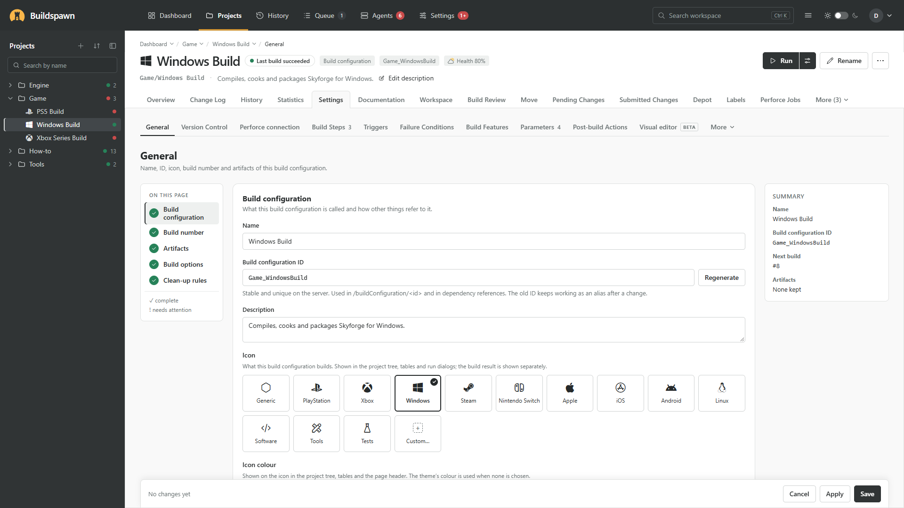

Settings homes
Each build configuration keeps its settings in a few clear sections, called settings homes. Every setting has one place, so you always know where to look.
Open a build configuration and click the Settings tab. A second row of tabs shows the settings homes. The ones that do not fit sit under More. A number beside a tab counts its items, for example Build Steps 3.

The homes
| Home | What it holds | Page |
|---|---|---|
| General | Name, ID, icon, build number, artifact rules, build options, clean-up rules and checkout options. | General |
| Version Control | The Git and Perforce roots to fetch. | Version Control |
| Perforce connection | Server, workspace and sync settings. Shown when the build configuration uses Perforce. | Perforce |
| Build Steps | The steps in the order they run. | Build Steps |
| Triggers | What starts a build. | Triggers |
| Failure Conditions | When a build counts as failed or unstable. | Failure Conditions |
| Build Features | Setup and reporting around the steps. | Build Features |
| Parameters | Every value the build passes to its steps. | Parameters |
| Post-build Actions | What happens after the build. | Post-build Actions |
| Visual editor | The same settings drawn as a graph. | The visual editor |
| More › Templates | The templates this build configuration is based on. | Templates |
| More › Dependencies | What this build waits for, and what waits for it. | Dependencies |
| More › Agent Requirements | Which agents may run it. | Agent Requirements |
| More › Other settings | Settings of add-ons with no page of their own. | Other settings |
| More › ID | The stable ID, its aliases and links. | IDs |
Saving
Some homes have a Save bar at the bottom of the window. It is as wide as the page and never covers anything. Nothing changes until you click Save (or Apply to save and stay on the page). The bar says No unsaved changes when there is nothing to save, and Cancel leaves without saving. Other homes, such as Build Features, save each change at once. Their bar says Changes on this page are saved as you make them.
Inherited settings
On Build Steps, Parameters, Build Features and Post-build Actions an item can come from a project or a template. It has a chip with the name of its source. You can Override it here, Disable in this job, or Reset it. See What a project passes down.
Who can change what
Changing settings needs the Configure permission on the build configuration. Without it the homes are read-only and say so.
Do you prefer a picture? Open Visual editor on the Settings tab. The form and the visual editor edit the same settings.